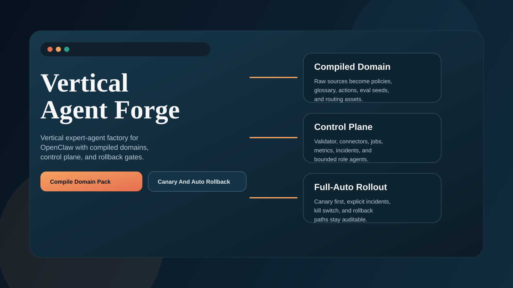
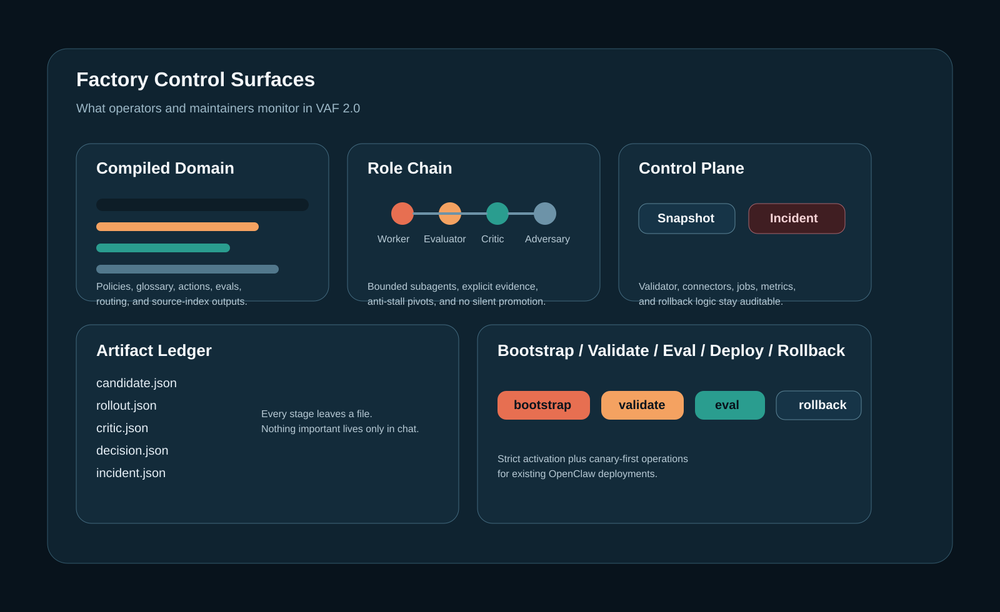
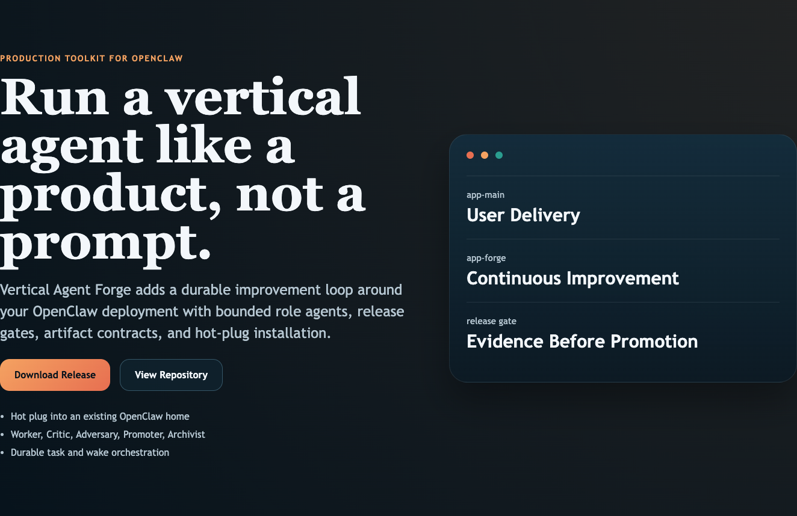
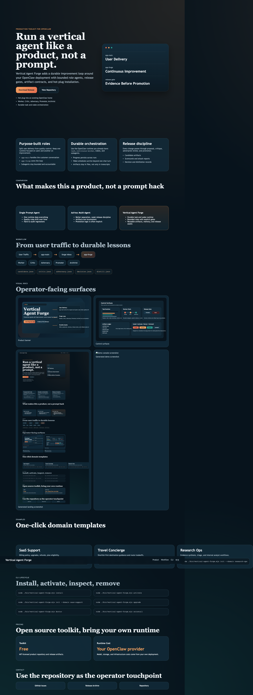

Purpose-built roles
Split user delivery from quality control. Keep one runtime focused on users and another on improvement.
app-mainhandles the customer conversationapp-forgeowns the loop- Subagents stay bounded and accountable
Production Toolkit For OpenClaw
Vertical Agent Forge adds a durable improvement loop around your OpenClaw deployment with bounded role agents, release gates, artifact contracts, and hot-plug installation.
Split user delivery from quality control. Keep one runtime focused on users and another on improvement.
app-main handles the customer conversationapp-forge owns the loop
Use the OpenClaw runtime you already have: task,
continuous-worker, wakes, and subagents.
Every change passes through proposal, critique, adversarial review, and promotion.
Workflow
Visual Docs




CLI Lifecycle
node ./bin/vertical-agent-forge.mjs installnode ./bin/vertical-agent-forge.mjs activatenode ./bin/vertical-agent-forge.mjs doctornode ./bin/vertical-agent-forge.mjs uninstall